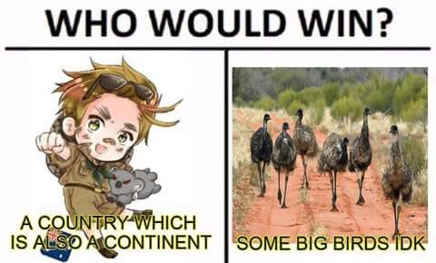
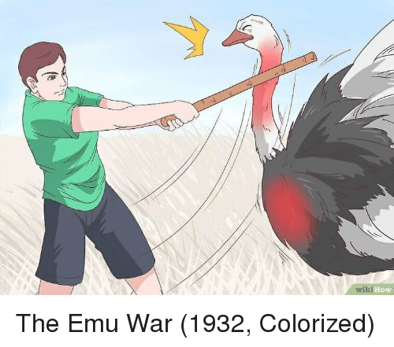

Tout commenca en 1932, en Australie, les anciens soldats de la Première guerre mondiale ont reçu des terres pour cultiver. Presque tous ce passa bien jusqu'à qu'une troupe de 20 000 emeus en migration arrivèrent
Préoccupé par le ravage de leurs cultures orchestrés par les emeus, les agriculteurs australiens forment une déléguation d'anciens soldats et rencontrent le ministre de la Défense. Ils demandèrent l'autorisation d'utiliser les armes contre les emeus, ce à quoi le ministre accepta à condition que l'armée s'en occuppe
La guerre commenca vraiment en Octobre 1932, et a été menée par le major GPW Meredith. Bien que les soldats australiens n'eurent aucune perte, la guerre contre les emeus ne fût pas un grand succès. Le nombre d'émeus tués est très incertain, certains l'estime à 50 et d'autres entre 200 et 500
Le 8 Novembre 1932, l'armée se retire, notamment à cause des médias affirmant que le nombre d'émeus tué est très faible
De nombreux fermiers protestèrent et le 12 Novembre le ministre de la Défense mobilisera à nouveau l'armée pour enfin mettre fin au problème que sont les émeus
En se rendant sur le terrain le 13 novembre 1932, l'armée a connu un certain succès au cours des deux premiers jours, avec une quarantaine d'émeus tués. Le troisième jour, le 15 novembre, a eu beaucoup moins de succès, mais le 2 décembre, les soldats tuaient environ 100 émeus par semaine.
Toutes ces attaques n'ont tout de même pas suffit à éradiquer la menace émeu. Les agriculteurs ont à de multiples reprises demandé à nouveau l'aide de l'armé. Le gouvernement n'accepta pas leur requête marquant ainsin la capitulation de l'Australie face aux émeus
Vingt ans plus tard, les fermiers optèrent pour la construction de clôtures infranchissables, dans lesquelles le gouvernement australien dépensa des milliers de livres australiennes en 1953.
L'humiliation de la défaite face aux émeus restera pour toujours graver de le coeur des australiens